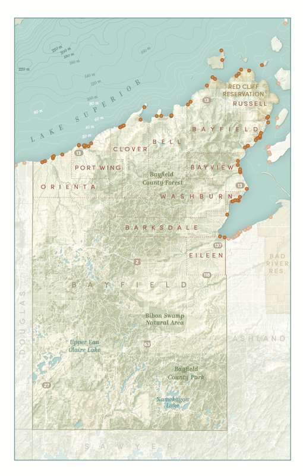

Maps for the Wisconsin Coastal Access Inventory Book
UW Cartography Lab & WI Sea Grant
While I worked at Sea Grant as a student, it was my job to update and locate new coastal access points throughout Wisconsin. I did this using the existing points, and by looking through the parcel database, google maps, and municipal websites. After I graduated, I transitioned to working at the Cartography Lab, where I helped to produce maps for an eventual publication. Aileen Clarke (her portfolio is here) created the spec sheet and design guidelines for the maps, which I followed to create the maps below. 